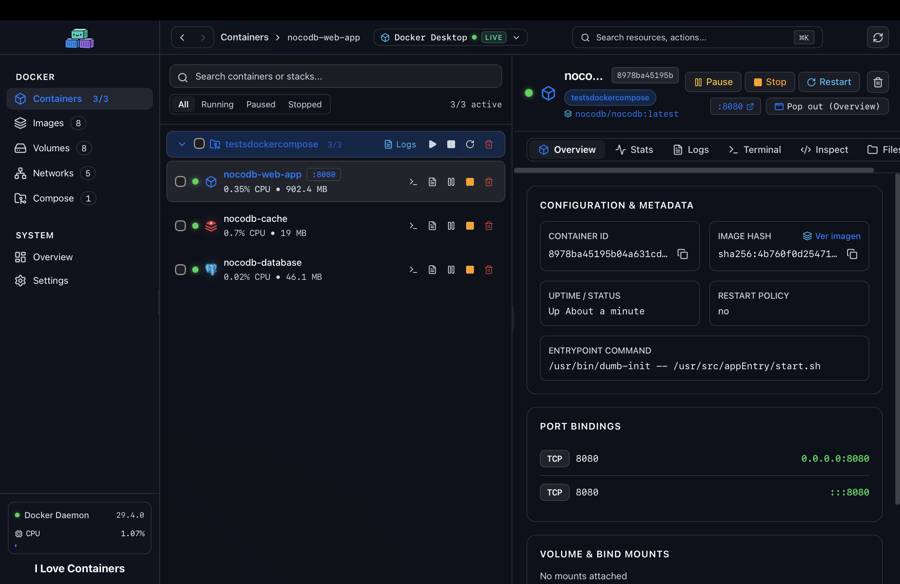
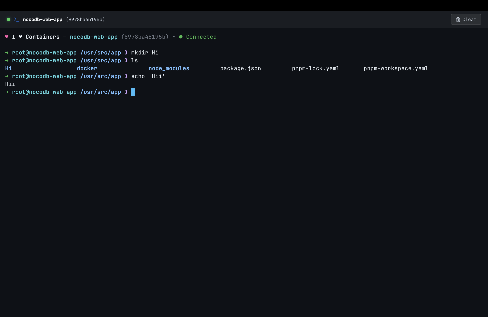
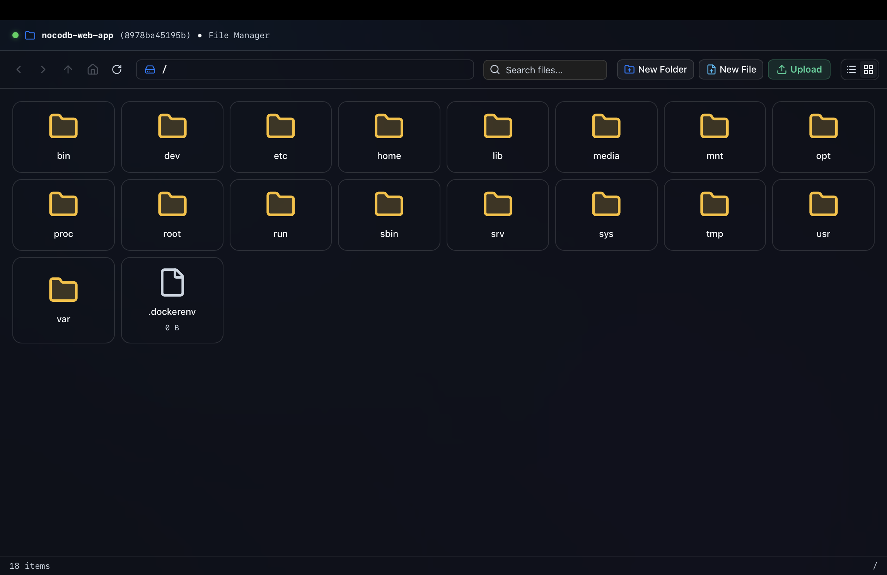
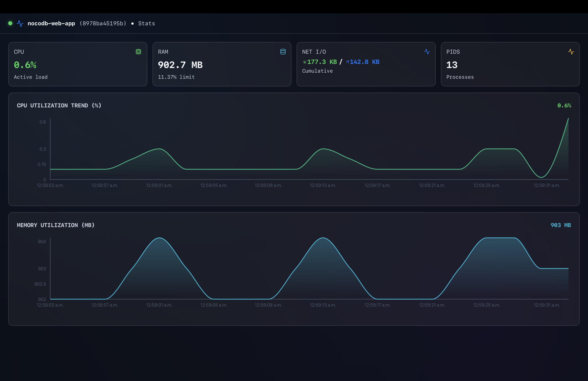
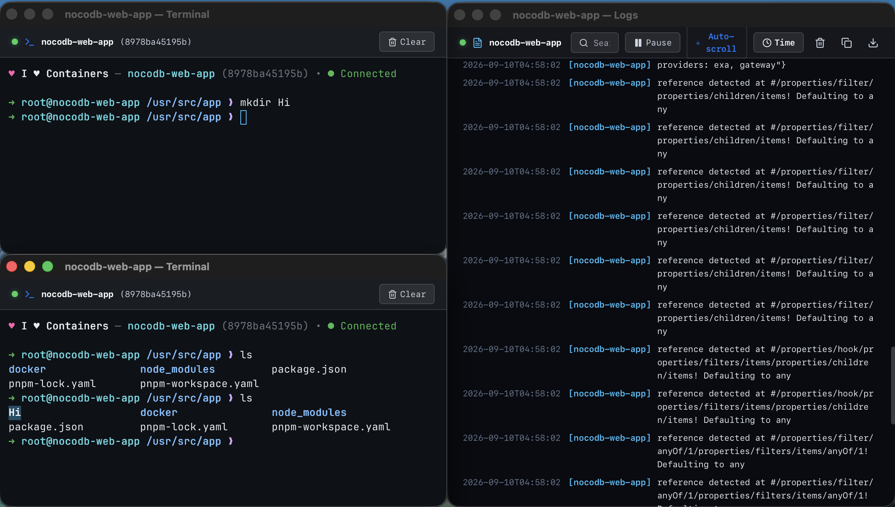

The fast, lightweight container manager for macOS
One unified client for Docker Desktop, OrbStack, Colima, Rancher, and Podman. Instant engine switching, native multi-window workflows, and in-container file editing.




Engineered for developer speed
Designed for instant startup, minimal resource usage, and deep macOS integration.
Multi-Engine Hot Switching
Switch between Docker Desktop, OrbStack, Colima, and Podman runtimes in under 100ms without restarting the app.
- ✓ Automatic socket autodetection in /var/run and ~/.docker
- ✓ Live daemon health probes and version diagnostics
- ✓ Independent engine telemetry streams
Native macOS Multi-Window
Detach terminals, live streaming logs, or telemetry into independent native macOS desktop windows.
- ✓ Full state synchronization across detached windows
- ✓ macOS traffic lights and custom overlay titlebars
In-Container File Editor
Browse directories and edit config files inside running containers without manual docker cp commands.
- ✓ In-place editing with syntax highlighting
- ✓ Breadcrumb navigation for container paths
Lightweight Native Core
Only 11.3 MB installed. Starts cold in under 200 milliseconds and runs in ~35 MB of idle RAM.
Command Palette & Shortcuts
Search containers, switch runtimes, and trigger actions directly with keyboard shortcuts.
Architecture & Footprint Comparison
Measured against standard container desktop applications on macOS.
| Capability | I Love Containers | Docker Desktop | Podman Desktop |
|---|---|---|---|
| Install Size | 11.3 MB | 450 MB – 1.2 GB | 320 MB – 650 MB |
| Multi-Engine Support | Docker, OrbStack, Colima, Podman, Rancher | Docker Desktop daemon only | Podman + partial Docker bridge |
| Detached Native Windows | Full support (Terminals, Logs, Stats, Files) | Not supported | Not supported |
| In-Container File Editing | Native visual tree & editor | Basic file list only | Requires external shell |
| Cold Startup Time | < 200 ms | 8 – 20 seconds | 4 – 10 seconds |
| Idle RAM Usage | ~35 MB | 450 MB – 1.2 GB | 320 MB – 650 MB |
| Engines Supported | 5 (Docker, OrbStack, Colima, Podman, Rancher) | 1 | 2 (Podman + partial Docker) |
| Command Palette | ⌘K global shortcuts | Not available | Not available |
| Open Source | Yes (MIT License) | No (Proprietary) | Yes (Apache 2.0) |
| Live Resource Metrics | CPU, Memory, Disk I/O, Network | Basic container stats | Basic container stats |
Application Showcase
Core views and management surfaces in the macOS desktop client.
Fleet & System Status
Inspect status badges, port forwards, and health indicators across local containers.
Interactive Terminal
Interactive container shell powered by xterm.js with ANSI colors and WebGL rendering.
In-Container File Manager
Browse the filesystem, view contents, and edit config files directly inside containers.

Multi-Window Workspace
Pop out inspector panes to secondary monitors in synchronized native windows.
Live I/O & Telemetry
Live CPU usage curves, memory working sets, and disk I/O updated in real-time.
Documentation
Installation, socket detection, and workflow reference.
Engine Detection
ILC inspects standard macOS socket paths and presents available engines in the sidebar and Command Palette (⌘K).
Docker Desktop: /var/run/docker.sock
OrbStack: ~/.orbstack/run/docker.sock
Colima: ~/.colima/default/docker.sock
Rancher Desktop: ~/.rd/docker.sock
Podman: ~/.local/share/containers/podman/machine/qemu/podman.sockIn-Container File Operations
The built-in file manager connects directly to the container API streaming layer. Navigate folder hierarchies, download files to your Mac, or edit configurations in place.
Changes are written back via streaming tar archives, preserving container permissions and timestamps.
Multi-Window Workflows
Click the pop-out button on any inspector tab (Terminal, Logs, Stats, Files) to detach it into an independent macOS WebKit window.
Detached windows maintain live synchronization with the primary application session and theme state.
Keyboard Shortcuts
Keybindings available globally throughout the desktop client:
| Shortcut | Action |
|---|---|
| ⌘K | Open Command Palette |
| ⌘B | Toggle Sidebar |
| R | Refresh Resources |
| M | Toggle Fleet / System View |
| T | Open Shell in Selected Container |
| L | Open Logs in Selected Container |
| S | Open Stats in Selected Container |
| Esc | Dismiss Overlays & Modals |
Download for macOS
Native builds for Apple Silicon and Intel Macs.
Apple Silicon
Download .DMGRequires macOS 12.0 or later.